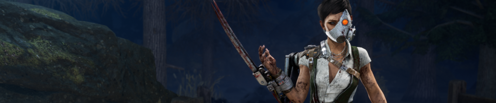

Par Alexis Hamieau | Le 20 mars 2023
Entre le test public (PTB) et la publication en direct du chapitre Tools of Torment, nous avons apporté une grande variété de modifications à The Skull Merchant pour aider à répondre à certains des commentaires que nous avons reçus. Nous la surveillons de près depuis, et bien qu’il semble que ces changements aient eu un effet positif sur sa performance, il y a quelques frustrations que nous voulons aborder le plus tôt possible. Sans ordre particulier, il s’agit de :
On n’a pas l’impression que le pouvoir du marchand de crânes l’aide suffisamment dans une poursuite.
On n’a pas l’impression qu’il y a assez de risque à avoir un piège à griffes.
Le marchand de crânes est trop doué pour contenir 3 générateurs, provoquant de très longues correspondances.
Les points douloureux sont un fil conducteur entre les commentaires que beaucoup d’entre vous ont donnés depuis la publication du chapitre. Pour rectifier chacun d’eux, nous avons apporté un grand nombre de modifications.
Les drones du marchand de crânes se verrouilleront sur les survivants, les rendant exposés pendant un certain temps. Cela peut éloigner les survivants des structures plus solides et les pousser dans une partie plus clairsemée de la carte. Cependant, comme beaucoup d’entre vous l’ont souligné, cela ne constitue pas vraiment une menace si vous êtes déjà blessé; Être frappé vous mettra déjà dans l’état mourant.
De même, les pièges à griffes ne sont pas également menaçants pour tous les joueurs. Bien que l’idée d’avoir votre emplacement constamment diffusé au tueur soit suffisamment dissuasive pour certains, les survivants plus confiants peuvent en fait accueillir une poursuite, choisissant plutôt de garder le tueur distrait pour leurs coéquipiers.
Pour améliorer sa force dans une poursuite, nous avons apporté quelques changements.
Tout d’abord, The Skull Merchant va maintenant gagner un effet de hâte croissant pour chaque survivant suivi sur son radar. Ce bonus commence à 3% pour un survivant, augmente à 5% pour deux, 6% pour trois et 7% pour quatre. Les pièges à griffes et les zones de drones actifs y contribueront, et le tueur n’a pas besoin d’inspecter son scanner pour en tirer profit. Cela récompensera le tueur pour avoir utilisé efficacement son pouvoir pour garder un œil sur sa proie.
Deuxièmement, la voûte d’une palette avec un piège à griffes entraînera la rupture de cette palette, détruisant le piège à griffes dans le processus. Cela faisait auparavant partie de l’add-on commun Ultrasonic Trap Speaker. Avec ce changement, être poursuivi avec un piège à griffes attaché devient beaucoup plus dangereux.
Ces ajustements combinés permettent à The Skull Merchant de tirer plus fréquemment de la valeur de son pouvoir, que le survivant qu’elle poursuit soit blessé ou non.
Le Marchand de Crâne excelle quand il s’agit de défendre un groupe de trois générateurs. Non seulement ses drones l’avertiront chaque fois qu’un survivant s’approchera d’un générateur, mais elle pourra également les remplacer facilement une fois qu’ils sont désactivés. Cela peut faire durer les matchs pendant une période excessivement longue sans qu’aucune des deux équipes ne fasse beaucoup de progrès. Ces matchs ont tendance à ne pas être trop intéressants pour toute personne impliquée et ne se terminent que lorsque quelqu’un abandonne.
Pour mettre un frein à sa capacité à défendre les générateurs, les drones ne sont plus immédiatement retournés à The Skull Merchant une fois qu’ils sont désactivés. Au lieu de cela, ils seront retournés une fois leurs pièges respectifs détruits. Cela rendra plus difficile le remplacement des drones désactivés sur ces générateurs.
Cela dit, cela limitera la fréquence à laquelle The Skull Merchant peut déployer de nouveaux drones. Par conséquent, nous avons une série de changements pour compenser cette perte de puissance.
Tout d’abord, pour s’assurer que les survivants ne peuvent pas tenir un piège à griffes indéfiniment pour l’empêcher d’utiliser son pouvoir, les pièges à griffes seront désormais détruits instantanément dès que leur batterie expirera, et les pièges à griffes ne se rempliront plus lorsqu’ils entreront dans une zone active. De cette façon, les pièges à griffes reviendront toujours après un certain temps.
Deuxièmement, les drones entreront dans un état non piratable chaque fois qu’un survivant avec un piège à griffes est proche. Cela empêchera un seul survivant de courir et de désactiver chaque drone, ce qui signifie que le tueur aura toujours une combinaison de quatre pièges à griffes ou drones à sa disposition. Combiné avec les changements apportés aux pièges à griffes mentionnés ci-dessus, The Skull Merchant tirera toujours profit de ses capacités, que ce soit par le biais de drones déployés ou de pièges.